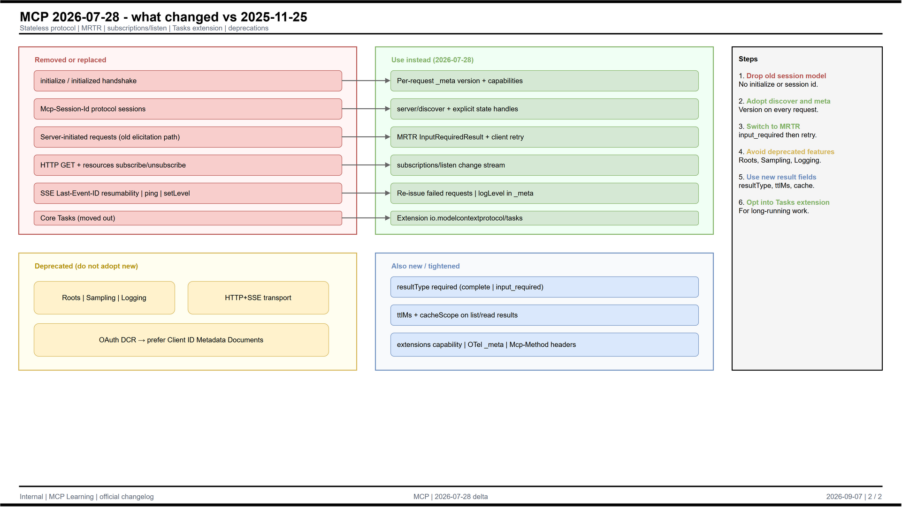

Personal study console for MCP revision 2026-07-28. Covers discovery, MRTR, transports, extensions, and migration drills. Not official docs.
Pinned to modelcontextprotocol.io / 2026-07-28. Progress stays in this browser.
Dated public specification
~10 h/week · quiz · shorts · Inspector lab
8 per week · rung-tagged
Stateless · discover · MRTR · Tasks
Lesson spine + diagrams from the vault study pack.
| Week | Focus | Labs |
|---|---|---|
| 1 | Foundations · host/client/server · primitives · transports | Architecture diagram · readings-core |
| 2 | 2026-07-28 breaks · discover · MRTR · subscriptions · deprecations | Old→new habit table · what's-new diagram |
| 3 | Security · OAuth/iss · requestState · Tasks/Apps extensions | Threat cards (stdio + remote) |
| 4 | Inspector · Skills vs MCP vs CLI · capstone | Migration memo · mock review |
Actors, RPCs, isolation
The heart of this track
Consent · iss · state integrity
Inspector · config practice
Self-rate honestly. Stored locally in this browser only.
Was → now pairs plus the vault changelog digest.
| Feature | Migrate toward |
|---|

Roles, _meta, RPCs, transports, security. Printable one-pager included.
High-trust links we actually cite. Official dated docs first.
Dated public docs only. Filter by week. Prefer these over lagging blog posts.
Three artifacts. Score each dimension 0–3. Public sources only — no secrets in submissions.
Seed deck until JSON loads
Eight questions per week. Check before advancing.
Expand What / Why / How on each card. Ranks move; treat this as a starting gallery.
Source: MCP Toplist composite (Sep 2026) + common first-install picks. Always re-check install auth and trust before wiring a server into a host.
Vertical explainers in a phone frame. Pick an episode from the rail on the right.